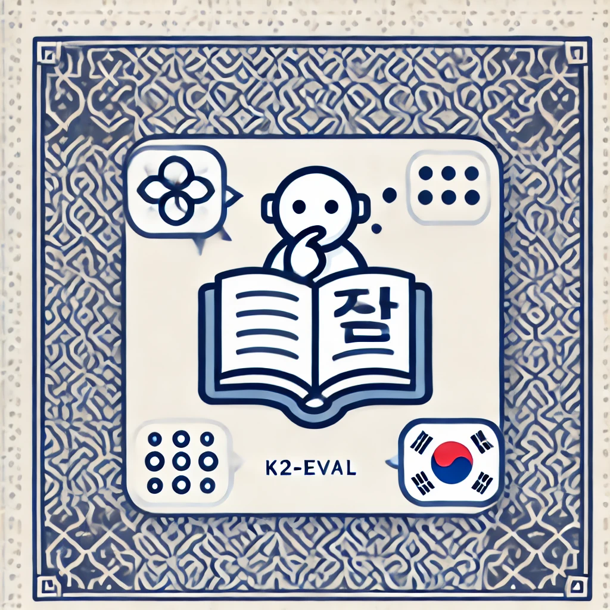
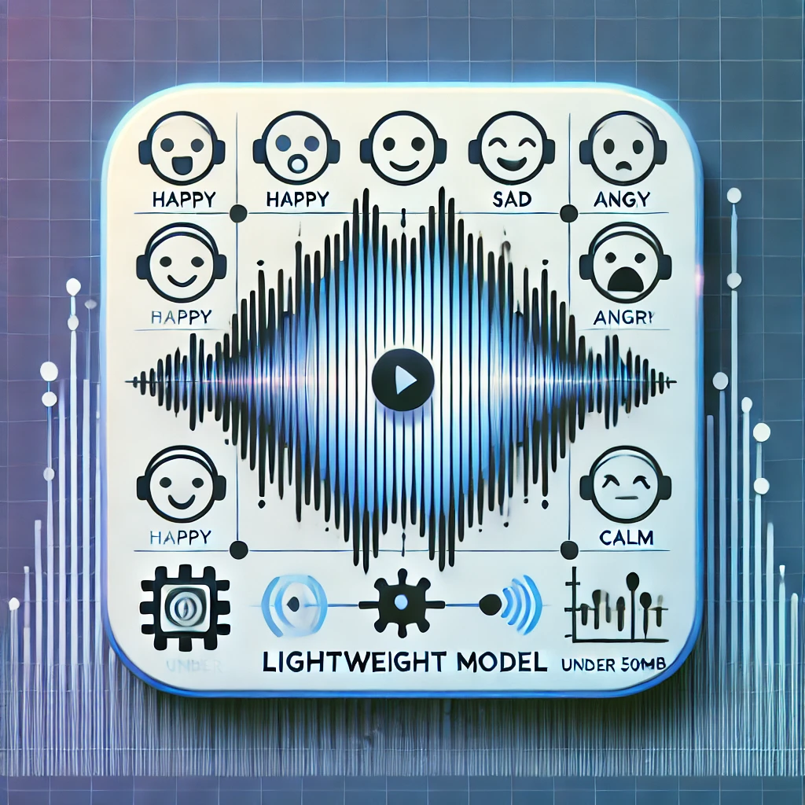
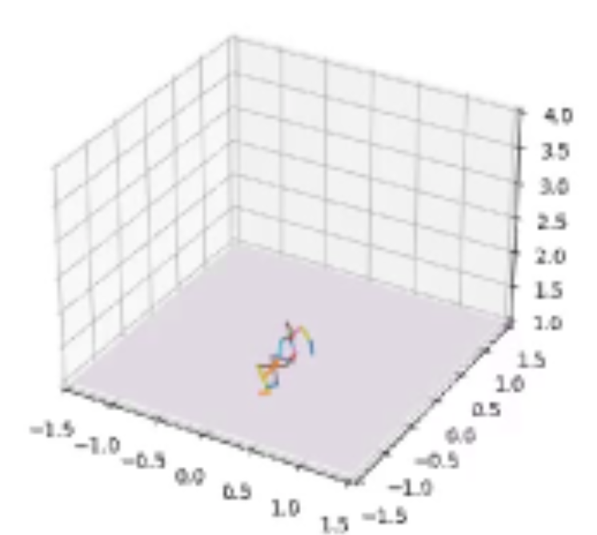
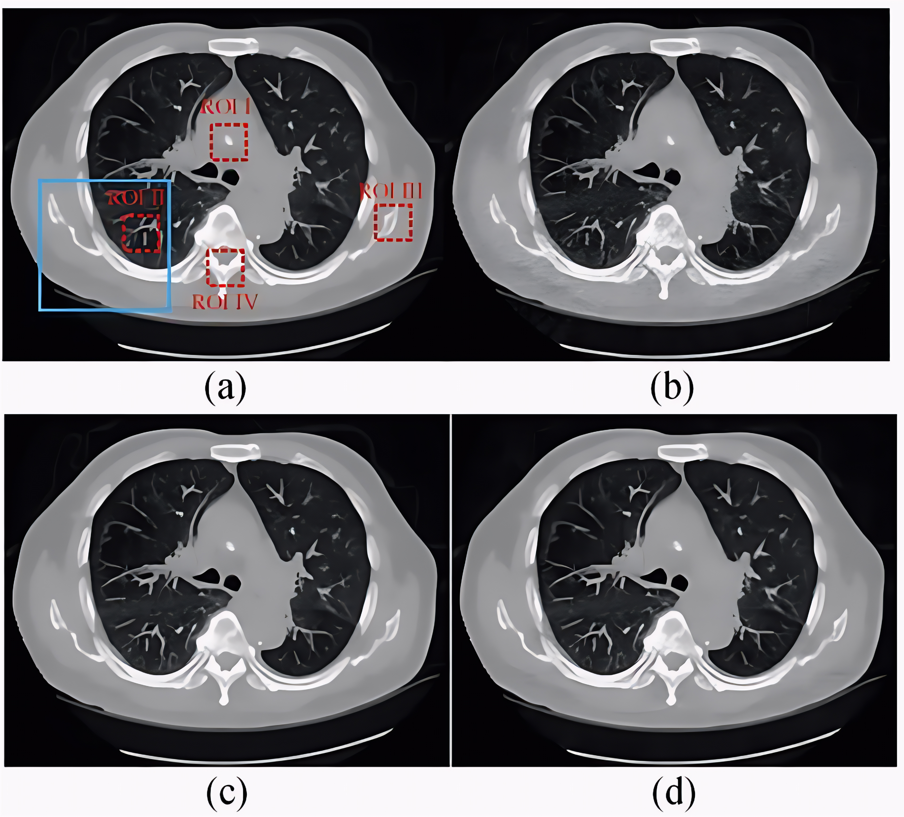
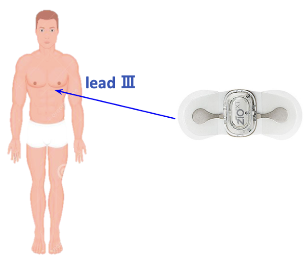

Education
Yonsei University, Seoul, South Korea
B.S. in School of Integrated Technology (GPA: 3.96 / 4.30)
Mar. 2022 – Feb. 2025 (Expected)
* One year early graduation.
|
Research Interests
My primary research goal is to fully understand how deep learning models work and to fully utilize them in various research areas, especially in computer vision.
So My primary research interest just lies in various topics about machine learning and computer vision, covering my goal.
Currently, I'm interested in Explainable AI, Generative Models, Efficient Machine Learning, etc. In the past, I have also studied Graph Neural Network (GNN), Reinforcement Learning (RL) and Natural Language Processing (NLP), especially about evaluating the performance of large language models.
|
Publications
|
|
HAE-RAE Bench: Evaluation of Korean Knowledge in Language Models
Guijin Son,
Hanwool Lee,
Suwan Kim, Huiseo Kim, Jaecheol Lee,
Je Won Yeom,
Jihyu Jung,
Jungwoo Kim, Songseong Kim
Proceedings of the 2024 Joint International Conference on Computational Linguistics, Language Resources and Evaluation (LREC-COLING 2024)
HAE-RAE Bench evaluates large language models' understanding of Korean culture, offering a challenge beyond traditional English-based benchmarks.
Our Dataset is available at HAERAE-HUB.
|
|

|
K2-EVAL: Harnessing the Evaluation of Linguistic Fluency and Ethnolinguistic Knowledge in Korean
Guijin Son, Hyunwoo Ko, Hoyoung Lee, Seunghyeok Hong, Yewon Kim, Jungwoo Kim
ACL 2024 Workshop, The 2nd Workshop on Cross-Cultural Considerations in NLP (C3NLP 2024)
K2-EVAL introduces a benchmark with 90 handwritten instructions that test knowledge of Korean language and culture, including 5400 human annotations to evaluate 32 LLMs. It also examines if GPT-4 can replace human evaluations.
|
|
Projects

|
Group Choreography Data Crawling Framework
This work, NextLevel2: Neural Extraction and Tracking Framework for K-POP Group Choreography is part of 24-2 Yonsei DSL Modeling Project.
We focus on the research gap that existing group choreography dataset collection methods require manual intervention, and propse a fully-automatic data collection framework.
This approach is expected to contribute to the scalability of group choreography dataset creation.
Our presentation video is available here. Code and Github will be fully released soon.
|
|

|
Audio Sentiment Classification
This work is part of 24-1 Yonsei DSL Corporate Project with WesomE.
Developed a lightweight model (under 500MB) for recognizing emotions from speaker's voice data, focusing on feature augmentation through analyzing high-frequency details of Fast Fourier Transform.
Due to security issues, the materials cannot be disclosed. Please contact me if needed.
|
|
|
Prompt Engineering in Image Generation Model
This work, InferPrompt: Reframing Prompt Engineering with BLIP-2, is part of 24-1 Yonsei DSL Modeling Project.
Prompt engineering in text-to-image generation model. We tried to improve the quality of generated image, by style transferring the inferred prompt. By adding re-questioning block, we could improve the detail quality of generated image.
Our presentation video is available here. Code and Github will be released soon.
|
|

|
NextLevel: A Choreography Generation Model with Lyric Understanding
This work is part of 23-2 Software Project (IIT4204) with Jaeho Jin, Sangjoon Yeo, and advised by Prof. JeongGil Ko.
We tried to represent lyrics into group choreography generation model. By incorporating text embedding into previous model, we could generate lyric-aware dance motions.
Our materials aren't disclosed now. Please contact me if needed.
|
|

|
Medical Image Super Resolution
Implementation of Low-Dose CT with a Residual Encoder-Decoder Convolutional Neural Network. This work is a part of the project in Medisys Lab, advised by Prof. Jongduk Baek.
The research focus on enhancing low-dose CT images by super-resolving them to match the quality of normal-dose images. Additionally, as a follow-up study, we replaced the original architecture with a U-Net model to further evaluate the effectiveness in preserving image details.
|
|

|
Acute Coronary Syndrome Detection on Wearable Device
Won an Award for Excellence at the 2023 Yonsei Medical Convergence Challenge (with ChangeDae Lee, Hyelim Kim, YoungJun Na)
Developed a ResNet-based deep learning model for diagnosing acute coronary syndrome using wearable devices, focusing on detecting the condition using ECG signals from a limited number of leads, optimized for real-world application on wearable platforms.
Our presentation template is available here.
|
|
Honors and Awards
Excellence Award, 2023 Yonsei Medical Convergence Challenge
Yonsei Medical Convergence Challenge (2023.01.30. ~ 2023.01.31.) held by The Medical Scientist Training Program(Undergraduate Course)
Various Scholarships
Detailed information about specific scholarships can be found here.
|
Talks
Normalizing Flow and Energy Based Model
24-2 Regular Session Speech in Yonsei DSL (video available here) - Sep 03, 2024
Mamba Review: Linear-Time Sequence Modeling with Selective State Spaces
24-2 Regular Session Speech in Yonsei DSL (video available here) - Aug 22, 2024
Life as a Undergraduate Student in Engineering Field
(Invited) Yeungnam High School, Daegu, Republic of Korea - Mar 16, 2024
|
Teaching Experiences
Computational Thinking and SW Programming (YCS1001)
Fall 2024, Summer 2024, Spring 2024, Spring 2023
Mechatronics Project (IIT4312)*
Spring 2024
* Via tutoring program hosted by Yonsei University.
|
Miscellanea
Yonsei Computer Club
11th Regular Member (Dec. 2023 - Now)
Head of Academic Team (Jun. 2024 - Now)
Yonsei Computer Club (YCC), founded in 1970, is the only central computer club at Yonsei University. YCC brings together students with a shared interest in computers and supports a variety of activities.
ElutherAI
Project Member (Sep. 2023 - Nov. 2023)
Eluther AI is a non-profit AI research lab founded in 2020. ElutherAI focuses on the interpretability and alignment of Large Language Models.
Yonsei Data Science Lab
Regular Member (Sep. 2022 - Now)
Member of Friendship Team (Jul. 2024 - Now)
Yonsei Data Science Lab (DSL) is a student community under the Department of Applied Statistics at Yonsei University, advised by Prof. Taeyoung Park.
Yonsei DSL focus on studying and applying various theories related to Data Science and Machine Learning, based on a statistical theory.
Yonsei Engineering Student Council
Executive Member (Apr. 2022 - Nov. 2023)
Freshman Vice Representative (Mar. 2022 - Feb. 2023)
|
|
Last updated on Oct 11, 2024.
© 2024 Jungwoo Kim. All rights reserved. Design and source code adapted from
Jon Barron's website.
|
|
{kind=link}